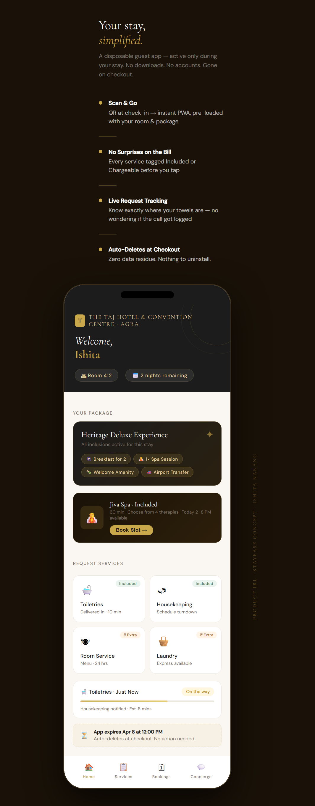

I build products people actually want to use — from zero to scale, in the messiest operational contexts.
Currently owning 6+ products on a platform serving 1.7M+ monthly active users across 10+ Indian states. Looking to bring this thinking to consumer-facing products at scale — where the user always has a choice.
1.7M+Monthly Active Users
6+Products Owned
10+Indian States
468K+Schools Served
Selected Work
Case Study 04 · Latest
The In-Stay Digital Gap: A Product Concept for Indian Luxury Hospitality
A product observation at a luxury hotel in Agra led to a deep research exercise — uncovering a gap in India's hospitality tech landscape and a NeuPass integration angle that sparked a formal conversation with IHCL's Head of Loyalty.
Consumer · HospitalityNeuPass · IHCLIndependent Research
Case Study 01
From v1 to v3: Solving a supply-side platform problem
How I evolved a content delivery platform from manual dumps to AI-generated content, growing it to 500K+ users across 10+ states.
Platform · AI500K+ Students10+ States
Case Study 02
When your biggest client refuses to use your product
How I retained Rajasthan as a client by building an SDK integration instead of forcing user migration — and fixed a data integrity crisis along the way.
Integration · SDK1M+ AssessmentsData Integrity
Case Study 03
Building a field inspection product from zero
Competitive research across 7+ state government systems revealed a clear market gap — then I wrote the PRD, designed offline-first flows, and shipped in 2 states.
0→1 · ResearchOffline-FirstMP & Sikkim
Products I've Built
Weekly Practice
Chatbot content platform · 500K+ students · 10+ states
Owned v1→v2, building v3 with AI-generated content
Shikshak Sahayak 2.0
AI teacher assistant chatbot · 30K+ teachers · Multiple states
Pricing and nutrition tool for bakeries · Freelance
Profit margins, calorie tracking · In development
Side Projects
In Development
Baker's Calculator
A pricing and nutrition tool for small bakery businesses — profit margin calculator, calorie tracker per serving, and curated business tips.
Writing Series
#ProductIRL
A LinkedIn writing series turning everyday observations into product management insights. Most recent piece on the in-stay digital gap in Indian luxury hospitality sparked a conversation with IHCL's Head of Loyalty within hours of publishing.
IN
A bit about me
I didn't find product management through an MBA or a course. I found it through classrooms — two years as a Teach for India fellow, then training 100+ teachers at LEAD. Now I build the products I once wished existed.
I didn't find product management through an MBA or a course. I found it through classrooms.
I spent two years as a Teach for India fellow, teaching 96 students across Grades 7-10. Then I trained 100+ teachers at LEAD. Then I managed education programs across Indian states. Now I build the products I once wished existed.
"Simplicity blended with empathy. Every feature I ship has to work the first time, for users who won't give you a second chance."
Today I own 6+ products on a platform with 1.7M+ monthly active users across 468K+ schools in 10+ Indian states. I'm now looking to bring this experience to consumer tech — where the bar for simplicity and delight is even higher, and the user always has a choice.
The Journey
Now
Product Manager
Owning 6+ products · 1.7M+ MAU · AI chatbots, assessment platforms, field inspection tools
Earlier
LEAD — Academic Trainer
Trained 100+ teachers · Managed education programs across states
Foundation
Teach for India Fellow
2 years · 96 students · Grades 7-10 · Where it all started
The In-Stay Digital Gap: A Product Concept for Indian Luxury Hospitality
A product observation at a luxury hotel in Agra led to a deep research exercise — uncovering a gap in India's hospitality tech landscape that nobody was connecting to NeuPass.
TypeIndependent Research & Concept
RoleSolo — Research, Product Thinking, Mockup
OutcomeFormal conversation with IHCL's Head of Loyalty
The Observation
During a stay in Agra over the Good Friday long weekend, I noticed something that felt impossible to unsee as a product person. The property was exceptional — the service, the detail, the feeling of being genuinely looked after. And then I needed extra towels.
I picked up the landline. That single moment — at a property backed by one of India's strongest loyalty ecosystems — revealed a gap no amount of thread count could paper over.
The Problem — Three Layers
Layer 1 — The request flow is broken. Four questions every guest has, none with a digital answer:
The Four Unanswered Guest Questions
Layer 2 — Global solutions exist but India's luxury segment hasn't adopted them. Canary Technologies (25,000+ hotels), STAY App, IRIS, Hoteligy — an entire category of QR-activated tools. No download, scan and go. IHCL launched I-ZEST post-Covid — digital check-in, QR menus. Smart. But it stopped at the surface. The in-stay service request layer was never closed.
Layer 3 — The data already exists. Nobody is connecting it.
The NeuPass Gap — Data That Exists But Never Surfaces During the Stay
The Solution
A disposable guest PWA activated at check-in via QR code. No download. No account creation. Package inclusions visible upfront — before any tap, not on the bill at checkout. Services tagged Included or ₹ Extra. Live request tracking. Spa booking from included sessions. Auto-deletes at checkout.
The Proposed Guest Flow
The Mockup
Built to show what the guest experience could look like — package inclusions surfaced upfront, Included vs ₹ Extra tags on every service, live request tracker, Jiva Spa booking with one tap, auto-delete banner at checkout.

Upload hotel-mockup.png to your repo to display the mockup here
'">
Concept mockup — disposable guest PWA for luxury hotel in-stay experience · Ishita Narang
Where It Gets Hard
The guest-facing layer practically designs itself. The real product challenge is the backend. Legacy Property Management Systems like Oracle OPERA and IDS were never built to talk to modern APIs. Getting a clean real-time integration that pushes service requests, pulls package data, and updates room status is where most teams hit a wall. It's not a vision problem — it's an unglamorous, expensive, deeply necessary infrastructure problem.
The technology exists. The loyalty data exists. The guest appetite exists. The missing piece is execution on the hard, unsexy, foundational layer that makes the pretty interface actually work.
Key Product Decisions
Disposable PWA over native app — friction before value kills adoption. A first-time guest shouldn't need a Tata Neu account to request towels.
Package transparency before the tap, not after. The hesitation before calling — "is this free or will it show up on my bill?" — is what kills spontaneous service usage.
NeuPass integration as the long-term play. The loyalty data already exists. The in-stay layer just needs to connect to it.
Auto-delete at checkout. Zero data residue builds trust and removes friction before scanning.
From v1 to v3: Solving a supply-side platform problem
How I evolved a content delivery platform from manual dumps to AI-generated content, growing it to 500K+ users across 10+ states.
ProductWeekly Practice
RoleProduct Owner (v1→v3)
Impact500K+ students, 10+ states
The Problem
Weekly Practice is a chatbot that delivers curriculum-aligned quizzes and homework to students. In v1, it relied entirely on state governments manually providing question banks — a slow, error-prone process that blocked expansion. Every new state meant months of waiting for content. Completion rates were declining because the experience felt static and one-size-fits-all.
How the Platform Evolved
Platform Evolution — v1 to v3
What I Did
V1 → V2: Diagnosed two root causes — no teacher involvement and no adaptability to performance. Built teacher-assigned homework, adaptive practice cutoffs, and state-configurable priority settings.
V2 → V3 (currently building): States refused to host content on our servers. Instead of pushing the same approach, led the shift to AI-generated assessment content — removing the supply-side dependency entirely.
Key Outcomes
Grew to 500K+ students across 10+ states
V2's configurability unlocked new state onboarding not possible with v1
V3 (in progress) eliminates the content dependency that blocked expansion for months
Key Product Decisions
Chose teacher agency over better quiz algorithms — bet that involvement drives adoption more than optimization. It worked.
State-configurable priority over hardcoded defaults — more engineering effort but served states with opposing pedagogical philosophies.
V3's AI shift wasn't about "adding AI" — it was the only way to remove a structural dependency.
When your biggest client refuses to use your product
How I retained Rajasthan as a client by building an SDK integration instead of forcing user migration — and fixed a data integrity crisis along the way.
ProductSchool Based Assessment
RoleProduct Manager
Impact1M+ assessments, 10+ states
The Problem
Our SBA platform had 1M+ assessments across 10+ states. But Rajasthan — one of our largest deployments — refused to move teachers to our platform. They had an existing app teachers used daily and didn't want the training overhead. Separately, manual registry dumps had created duplicate student records, corrupting assessment results.
The SDK Architecture
SDK Integration — Meeting the Client Where They Are
What I Did
Problem 1 — Rajasthan integration: Instead of forcing migration, built an SDK to embed our assessment webview inside Rajasthan's existing Shikshak App. Teachers never left their familiar interface. I wrote the integration specs, coordinated on SDK architecture, and managed testing with Rajasthan's technical team.
Problem 2 — Data integrity: Built a webview to simplify assessment capture. Discovered the duplicate records issue, traced it to manual registry uploads, and architected validation logic to identify and clean duplicate entries.
Key Outcomes
Retained Rajasthan as a client — zero teacher migration required
SDK approach became a template for other resistant states
Validation logic cleaned the registry, ensuring accurate assessment records
SBA platform now at 1M+ assessments across 10+ states
Key Product Decisions
Chose integration over migration — met the client where they were instead of where we wanted them to be.
Built the webview because the chatbot interface was too complex for multi-step assessment flows.
SDK approach has reuse potential — any state that refuses to migrate can get the same integration.
Competitive research across 7+ state government systems revealed a clear market gap — then I wrote the PRD, designed offline-first flows, and shipped in 2 states.
ProductSchool Inspection App
RoleProduct Manager (0→1)
ShippedMadhya Pradesh & Sikkim
The Problem
School inspections across Indian states were paper-based. No digital tracking, no accountability loop, no systematic follow-up. Reports went into filing cabinets.
The Closed-Loop Accountability Flow
The Accountability Loop — The Core Differentiator vs. Every Existing System
Research
I studied 7+ existing systems: ShalaDarpan + ShalaSamblan (Rajasthan), SSA CRC Monitoring App (Gujarat), m-PARIDARSHAN (West Bengal), and 4+ others. Key finding: no existing solution combined intelligent scheduling + dynamic forms + spot assessments + closed-loop ticketing. Every solution was state-locked and lacked an accountability layer.
Product Design
PRD covered: offline-first inspection with auto-sync, task-based assessment with mandatory comments on negative findings, photo/video evidence, closed-loop feedback, and 24-hour session management.
Key Outcomes
Shipped v1 in Madhya Pradesh and Sikkim
Building v2 with geo-tagging and push notifications
Research identified a clear gap no state system had addressed
Key Product Decisions
Offline-first was non-negotiable — inspectors visit rural schools with unreliable connectivity.
Mandatory comments on "No" responses — forces inspectors to explain, not just check boxes.
Timestamp-based last-write-wins for concurrent data syncs.
The closed-loop (Inspector → HoS → Inspector reinspection) was the core differentiator — every other system was one-directional.